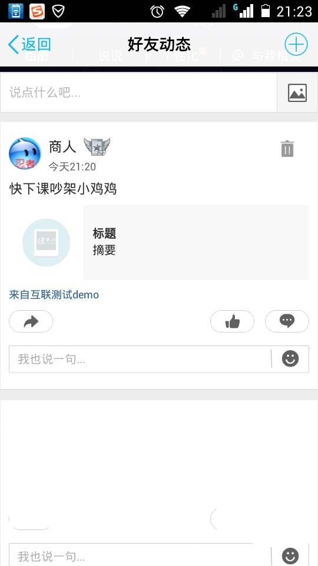
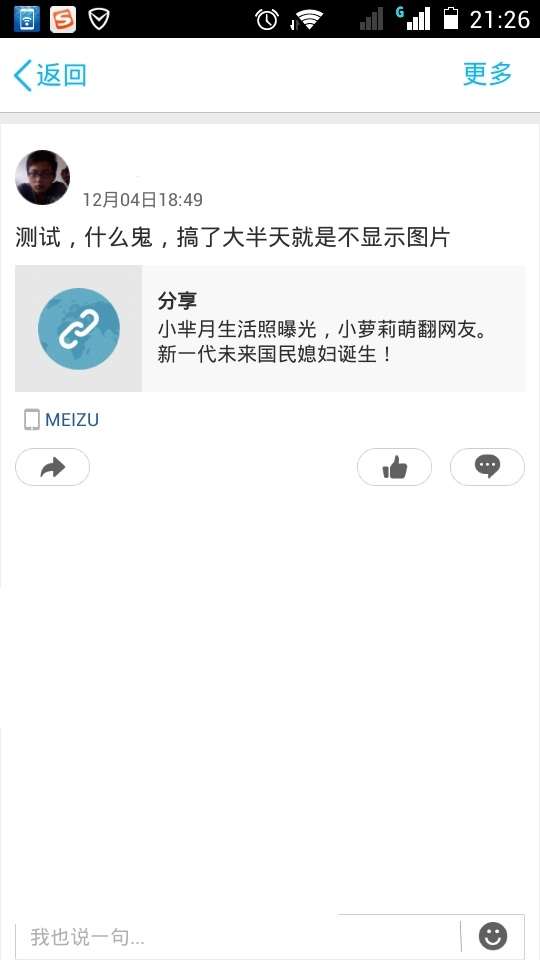

RadioGroup+RadioButton+ViewPage搭建主页面的原因
RadioGroup+RadioButton是单选的一个控件，这样在做切换的时候，可以根据滑动当前的RadioButton设置控件的背景和颜色
百度地图获取市的坐标的接口
http://my.oschina.net/xiaogg/blog/298226
在启动的Activity中配置android:clearTaskOnLaunch="true" 的时候，当吧app退到后台之后，再次进入不会保留原来的内容。
QQ分享如果图片是在内网服务器上的，分享图片会不成功，不显示图片
微信分享闪退，调出微信分享页面之后就闪退了。
原因比较离奇，估计是打包的问题，我换了个工作空间，从新打包安装就好了, 签名文件特别需要注意，要使用官方的签名文件制作
工具类生成签名文件。
我在集成微信分享的时候遇到了这个问题，就是我分享网页的时候，填写了一个跳转链接，在朋友圈点击我分享的内容之后跳转到一个网页，但是我发现链接多加了from=timeline&isappinstalled=1造成无法访问链接。
我原来的链接是
http://www.autobobo.com/Shop/ShopPage?userid=EXzsRQ3GnhsHzIHj6Y3wNA.2015.12
分享到微信朋友圈，在朋友圈点击的时候链接就变成了这个
http://www.autobobo.com/Shop/ShopPage?userid=EXzsRQ3GnhsHzIHj6Y3wNA.2015.12&from=timeline&isappinstalled=1
后边多加了from=timeline&isappinstalled=1造成访问失败
解决方法以及原因：
原因是微信的路径中有from参数，我们的服务器端的路径中也有一个参数是from，微信的from把我们的from携带的参数
给覆盖掉了，所以造成访问失败，解决办法，让服务器端的人把，from该为其他的参数就ok了。
我登录QQ了 然后分享QQ不管是成功，失败，返回都没事 没登录的情况下 我点击分享跳到QQ的登录页面
然后我在返回回来的话就有个透明的activity 那个页面就直接卡住了 然后点击个home键又好了
QQ的SDK的问题，官方文档中有说明
新浪微博取消分享的时候，在三星note3上，取消分享之后界面出现卡动。
微博的SDK版本太低了换到weiboSDKCore_3.1.2.jar这个版本就好了。
分享到QQ空间的图片路径为：
http://img.pinkan.com/topic/20151214/145008037334649.jpg
的时候分享到QQ空间不显示图片，但是在掉起QQ分享页面的时候显示该图片。
分享到QQ空间的图片路径为：
http://img.pinkan.com//topic//20151214//145008037334649.jpg
的时候分享到QQ空间显示图片。
分享到QQ空间的图片路径为：
http://pic.autobobo.com/
的时候分享到QQ空间不显示图片，但是在掉起QQ分享页面的时候显示该图片，原因是：
http://pic.autobobo.com/
路径中没有图片，这是图片服务器中找不到图片的时候，默认的要给设置一个图片，而默认的设置的图片的名字是default.png，所以把路径改为http://pic.autobobo.com//default.png就好了
总的来说不显示图片还是因为找不到图片引起的。
展示一下失败和成功的效果图片


分享到空间的图片不显示。
自己实现分享，不使用第三方的自定义界面
微信分享，需要打包运行才能唤起分享的界面，打包的签名文件是项目跟目录下的叫养车的这个文件
微信分享官方的demo，运行的时候需要把自己的debug.keystore替换或者设置为官方提供的debug.keystore
如果覆盖掉自己的debug.keystore的时候一定要记得对自己的最一个备份。切记
QQ分享，demo无需打包运行，如果是正式的项目需要打包运行才能唤起分享界面
QQ分享官方的demo，demo无需打包运行，如果是正式的项目需要打包运行才能唤起分享界面
微博分享，需要打包运行才能唤起分享的界面，打包的签名文件是项目跟目录下的叫我帮你养车的这个文件
微博分享官方的demo，运行的时候需要把自己的debug.keystore替换或者设置为官方提供的debug.keystore
如果覆盖掉自己的debug.keystore的时候一定要记得对自己的最一个备份。切记
微博分享官方的SDK
总结一哈：总的来说使用非常简单，但是要做到兼容比较不容易，还存在一个问题，就是如果一个APP中
有多个地方使用到了分享，微信和QQ没有什么问题，微博就比较操蛋了，存在多个的情况，他会不执行回调接口，
解决这个问题的办法是把微博分享相关的写在一个透明的Activity中，哪里需需要分享，就启动透明的Activity.
还有如果需要考虑分享本地图片的情况，怎么弄，我换没有解决，如果谁有好的想法大家可以探讨一下。
到这里分享暂时告一段落。